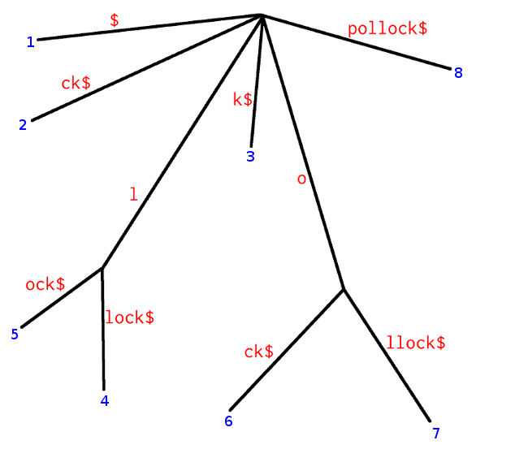

Suffix-Arrays
Einführung und Anwendungen
Proseminar Stringmatching
05.06.2012
———
André Röhrig
"The main advantage of suffix arrays over suffix trees is that, in practice, they use three
to five times less space.[…]It is believed that suffix arrays will prove to be better in practice than suffix trees for many applications."
- Udi Manber & Gene Myers (1991)
adorno$
- A[1] = 7 $
- A[2] = 1 adorno$
- A[3] = 2 dorno$
- A[4] = 5 no$
- A[5] = 6 o$
- A[6] = 3 orno$
- A[7] = 4 rno$
A = [7,1,2,5,6,3,4]
Was sind Suffix-Arrays?
- Suffix-Arrays: Integer-Arrays
- Suffixe lexikographisch sortiert
- gespeichert werden die Indizes der Suffixe im String
- Suffix-Arrays können Suffix-Trees ersetzen
- vorteilhaft vor allem durch niedrigeren Speicherbedarf
Konstruktion
- naiver Ansatz: alle Suffixe erstellen und dann lexikographisch sortieren
- Suffix-Arrays können mit Hilfe von Suffix-Trees erzeugt werden.
- dazu wird Tiefensuche auf den Suffix-Tree angewendet
- Tiefensuche benötigt \(\mathcal{O}\)(|Knoten|+|Kanten|)
- bekannt: Suffix-Trees in linearer Zeit möglich
- daraus folgt lineare Zeit der Konstruktion auf diesem Weg
Tiefensuche
pollock$

B = [8,6,7,3,4,5,2,1]
Direkter Konstruktionsalgorithmus
- Vorteil von Suffix-Arrays gegenüber Suffix-Trees in der Konstruktion
- meist also unsinnig
- Speicherbedarf oft Ausschlusskriterium
- Algorithmus von Udi Manber und Gene Myers erste Lösung für dieses Problem
Manber-Myers-Algorithmus
- nutzt Bucket-Sort
- [992,090,013,010,012,099]
- [992,090,013,010,012,099]
- [090,013,010,012,099|992]
- [090,013,010,012,099|992]
- [013,010,012|090,099|||992]
- [013,010,012|090,099|||992]
- [010|012|013|||090|099|||||992]
- Bucket-Sort ist stabil!
Manber-Myers: Vorbereitung
- im ersten Schritt wird ein Array [1..Wortlänge] erstellt
- für das im Anschluss verwendete Beispielwort "teteatete$" also:
- A = [1,2,3,4,5,6,7,8,9,10]
Manber-Myers: Vorbereitung
- teteatete$ A[1]=1
- eteatete$ A[2]=2
- teatete$ A[3]=3
- eatete$ A[4]=4
- atete$ A[5]=5
- tete$ A[6]=6
- ete$ A[7]=7
- te$ A[8]=8
- e$ A[9]=9
- $ A[10]=10
1. Sortierschritt
- $ A[1]=10
- atete$ A[2]=5
- eteatete$ A[3]=2
- eatete$ A[4]=4
- ete$ A[5]=7
- e$ A[6]=9
- teteatete$ A[7]=1
- teatete$ A[8]=3
- tete$ A[9]=6
- te$ A[10]=8
A = [10,5,2,4,7,9,1,3,6,8]
2. Sortierschritt
- das Array sieht nach dem ersten Zeichen sortiert ergo so aus: A = [10,5,2,4,7,9,1,3,6,8]
- die Sortierung nach dem zweiten Zeichen ebenso durchführbar, jeweils in den Buckets Bucket-Sort durchführen
- effektiver ist es jedoch auszunutzen, dass bereits nach jedem zweiten Zeichen eines Suffix sortiert wurde:
- denn jedes zweite Zeichen ist auch erstes Zeichen eines anderen Suffix(abgesehen vom jeweils kleinsten Suffix; hier: "$")
2. Sortierschritt
- $ A[1]=10
- atete$ A[2]=5
- eteatete$ A[3]=2 e$ A[3]=9
- eatete$ A[4]=4 eatete$ A[4]=4
- ete$ A[5]=7
- e$ A[6]=9
- teteatete$ A[7]=1 teteatete$ A[7]=1
- teatete$ A[8]=3 teatete$ A[8]=3
- tete$ A[9]=6 tete$ A[9]=6
- te$ A[10]=8 te$ A[10]=8
2. Sortierschritt
- $ A[1]=10
- atete$ A[2]=5
- eteatete$ A[3]=2 e$ A[3]=9
- eatete$ A[4]=4 eatete$ A[4]=4
- ete$ A[5]=7 eteatete$ A[5]=2
- e$ A[6]=9
- teteatete$ A[7]=1 teteatete$ A[7]=1
- teatete$ A[8]=3 teatete$ A[8]=3
- tete$ A[9]=6 tete$ A[9]=6
- te$ A[10]=8 te$ A[10]=8
2. Sortierschritt
- $ A[1]=10
- atete$ A[2]=5 atete$ A[2]=5
- eteatete$ A[3]=2 e$ A[3]=9
- eatete$ A[4]=4 eatete$ A[4]=4
- ete$ A[5]=7 eteatete$ A[5]=2
- e$ A[6]=9 ete$ A[6]=7
- teteatete$ A[7]=1 teteatete$ A[7]=1
- teatete$ A[8]=3 teatete$ A[8]=3
- tete$ A[9]=6 tete$ A[9]=6
- te$ A[10]=8 te$ A[10]=8
2. Sortierschritt
- $ A[1]=10 $ A[1]=10
- atete$ A[2]=5 atete$ A[2]=5
- eteatete$ A[3]=2 e$ A[3]=9
- eatete$ A[4]=4 eatete$ A[4]=4
- ete$ A[5]=7 eteatete$ A[5]=2
- e$ A[6]=9 ete$ A[6]=7
- teteatete$ A[7]=1 teteatete$ A[7]=1
- teatete$ A[8]=3 teatete$ A[8]=3
- tete$ A[9]=6 tete$ A[9]=6
- te$ A[10]=8 te$ A[10]=8
3. Sortierschritt
- Fortfahren wie in Schritt 1 und 2 möglich
- Sortierung nach 1. und 2. Zeichen implizit = Sortierung nach 3. und 4. Zeichen (da Suffixe immer auch Suffix der anderen Suffixe)
- also: Sortierung nach dritten und vierten Zeichen in einem Schritt
3. + 4. Sortierschritt
PLATZHALTER
Resümee Manber-Myers-Algorithmus
- Laufzeit \(\mathcal{O}\)(m \(\cdot\) log n)
- geringerer Speicherbedarf
- aber: keine inneren Knoten
- deshalb weniger Anwendungen als Suffix-Trees
Binäre Suche
einfaches VerfahrenWorst-Case-Komplexität \(\mathcal{O}\)(m \(\cdot\) log n)im normalen Anwendungsfall aber deutlich schneller
Verbesserte Binäre Suche
- durch bekannte Informationen weniger Vergleiche ermöglichen
- -> lcp: longest common prefix
- die Länge des größten gemeinsamen Prefix zweier Suffixe wird zusätzlich gespeichert
- wiederholte Zeichenvergleiche werden verhindert
- Worst-Case: unverändert
- aber: deutliche Verbesserung im Normalfall
Fazit und Ausblick
- Linearzeitkonstruktion möglich
- Enhanced Suffix-Arrays: funktional gleichwertig mit Suffix-Trees
- PLATZHALTER FÜR TABELLE MIT ALGORITHMENVERGLEICH